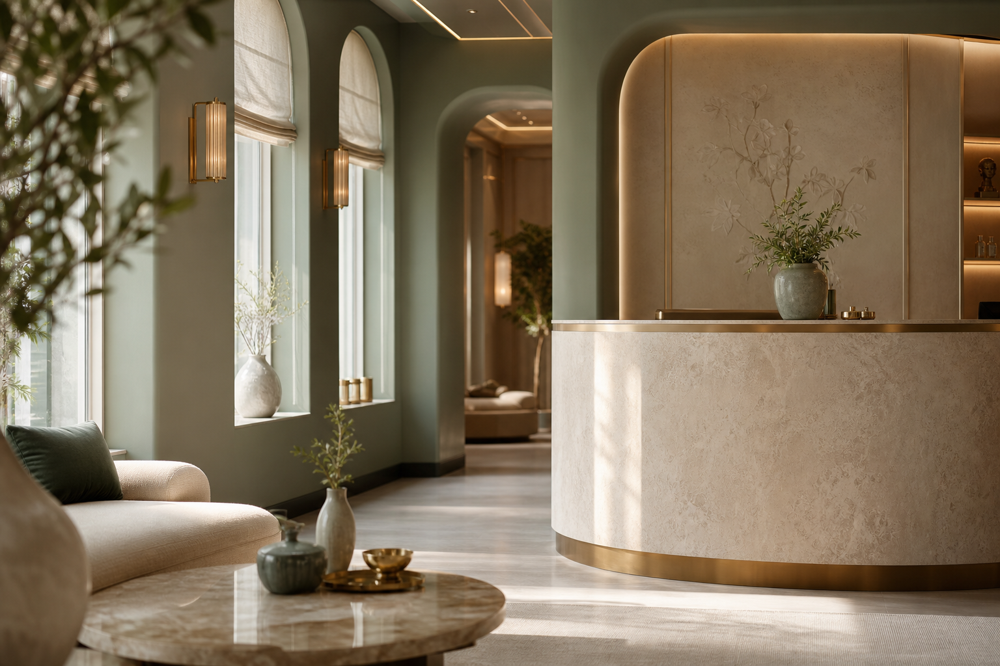
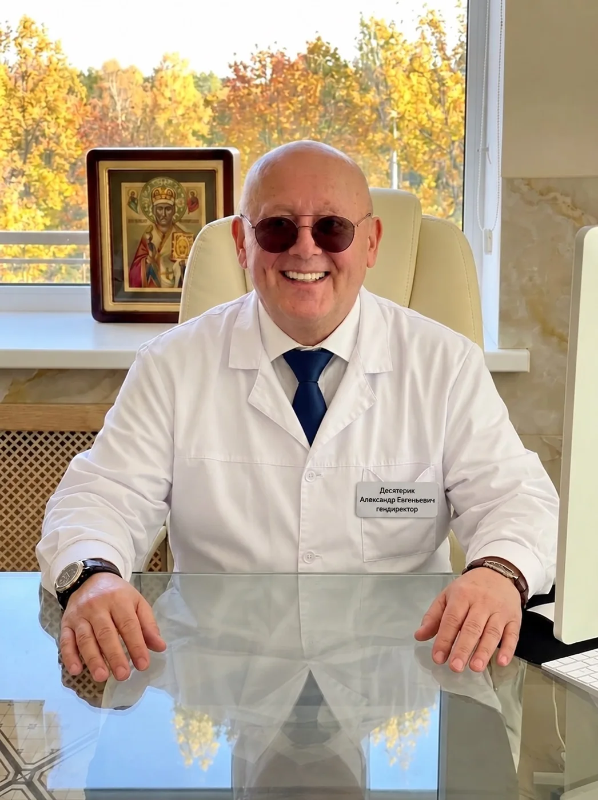
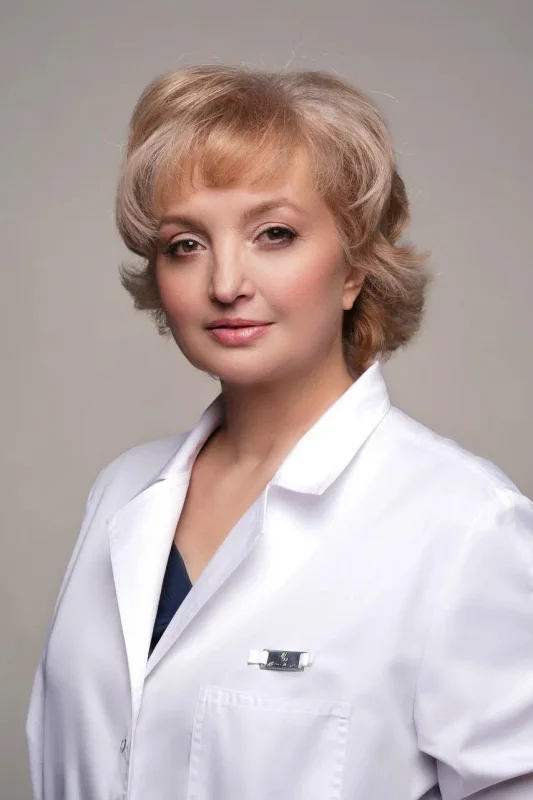
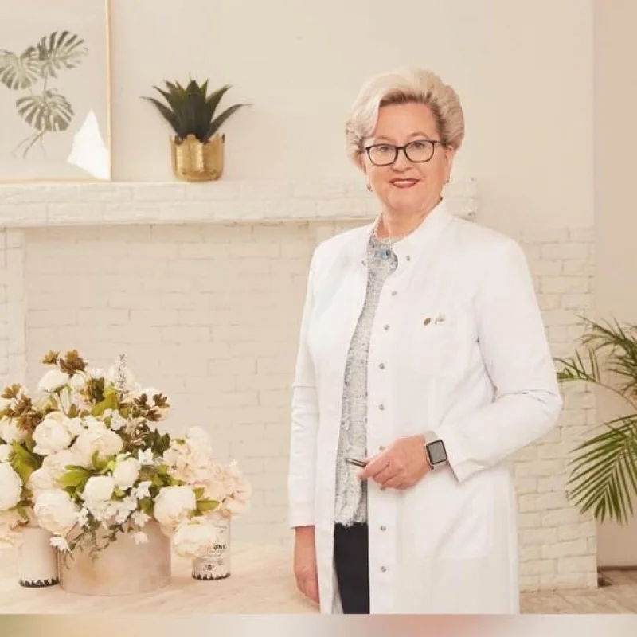

Знакомство
Обсуждаем ваш запрос и подбираем специалиста.

МОСКВА · АРБАТ · ФИЛИППОВСКИЙ ПЕРЕУЛОК, 18
DOMUS SALUTISТрадиционная восточная медицина, восстановление и активное долголетие — в одном пространстве в сердце Москвы.
Записаться на приёмОткрыть институт ↓ВСЕЛЕННАЯ ИТВМ
От первой консультации до персональной программы восстановления. Выберите направление — мы поможем определить следующий шаг.
История института и индивидуальный подход к каждому пациенту.
02Восемь направлений и методы восточной и восстановительной медицины.
03Персональное сопровождение и направление регенеративной медицины.
04Термальные процедуры, массажи и время для восстановления.

ОБ ИНСТИТУТЕ
ИТВМ объединяет традиционные практики, консультации специалистов и современные возможности диагностики. В основе подхода — внимание к человеку и индивидуальная схема помощи после обследования.
Клиническая база Института восточной медицины РУДН. Исторический центр, в пешей доступности от метро.
Познакомиться с клиникойVITA · ELYSIUM
Лаборатория вечной юности теперь — часть единого пространства ИТВМ. Наука, диагностика и персональный подход к сохранению качества жизни.
ВАШ ПУТЬ В ИТВМ
Обсуждаем ваш запрос и подбираем специалиста.
Врач собирает анамнез и определяет необходимые обследования.
Согласуем подход, стоимость и последовательность процедур.
Оцениваем динамику и корректируем план с лечащим врачом.
СПЕЦИАЛИСТЫ ИТВМ
Подробные профили врачей: образование, специализация и профессиональная практика.

Главный врач института традиционной восточной медицины.
Профиль специалиста ↗
Руководитель департамента по науке и инновациям. К. М. Н. Доцент.
Профиль специалиста ↗
Врач гинеколог-репродуктолог высшей квалификационной категории, д.м.н., профессор.
Профиль специалиста ↗ОТКРЫТЫЙ ПРАЙС-ЛИСТ
Консультации, диагностика и процедуры — с ценами из прайс-листа института.
ВАШ ПЕРВЫЙ ШАГ
Администратор поможет выбрать специалиста, уточнит стоимость и подберёт удобное время визита.
Записаться на консультацию